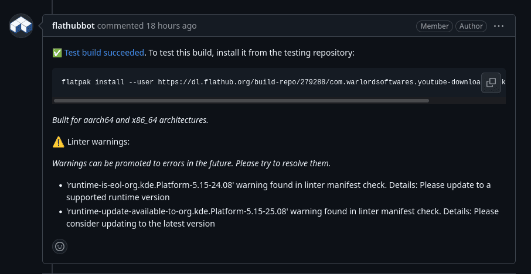
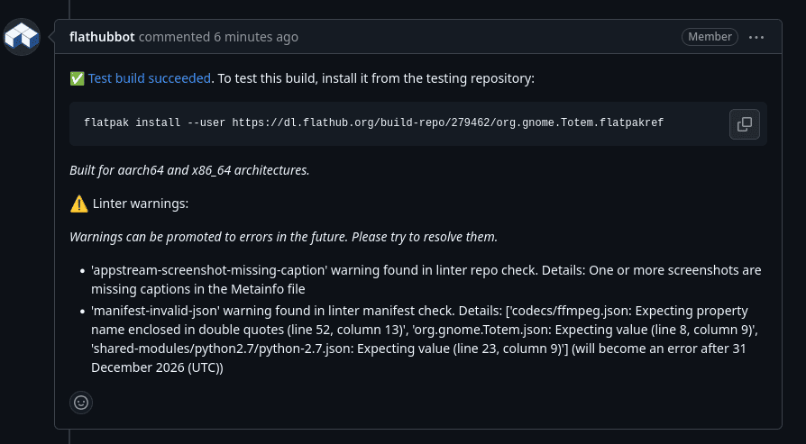

In my last post, I said that Flatpak Builder Lint had reached a “stable” state and I had not needed to touch the code for a while. While the former assertion is still true, I nevertheless ended up doing some work on it, which I will outline in this post.
Tests
Flatpak Builder Lint supports validation of four artifact types, the
primary three being a Flatpak manifest, a build directory produced by
flatpak-builder, and a Flatpak repository generated by
flatpak-builder or similar tooling. Most of the validation logic is
shared across these artifact types, but over time certain checks had
to be implemented as artifact specific. For example, validating the
input Flatpak manifest requires access to fields that are not
preserved in the build directory or the generated manifest.json, which
omits or transforms parts of the original input manifest.
Introducing artifact specific checks means also having the necessary test coverage for all the artifact types. However, since its inception, the linter only included integration tests for manifest and build directory checks. There was no test coverage for repo checks, and unit tests were entirely absent.
I recall discussing the addition of repo check tests multiple times around 2022, when I first started working on the project, but this never happened for one reason or another. Instead, some time in 2023, I added several smoke-style end-to-end tests directly in the GitHub CI YML to reduce regressions, and I structured the validation logic so that it was shared between artifact types. This helped to minimise breakages in a specific artifact check.
I finally gathered the motivation to add proper tests for the repo check last month. This completes a long time wishlist item I had. I created a shared testlib in the process so that I can reuse the existing builddir check tests for the the repo check tests. It creates a builddir out of the test artifacts and commits them to an OSTree repo before running the tests on a temporary directory.
I also managed to migrate the smoke tests from CI YML to a proper pytest integration tests. This means they can be run locally easily and managing them is much easier. I also added some unit tests and migrated some unit tests that were lying in CI yml.
I am now quite satisfied with the testing infrastructure of the linter and hopefully it does the job of catching errors.
Per-repo linter exceptions
All linter error codes in Flatpak Builder Lint can be suppressed via exceptions. These can be defined either locally or submitted to Flathub for applications hosted there. The exception file is structured around Flatpak IDs, which means that any exception submitted to Flathub applies uniformly to all branches of a given application.
This becomes problematic because Flathub maintains both stable and beta
branches. In practice, these branches can diverge in behavior - for
example, the stable branch of an application might still require an
exception for --filesystem=home, while the beta branch may have
migrated to using portals and no longer needs it. Under the existing
structure, merging such an exception results in it being applied to
both branches, even when it is only relevant to one.
So I added support for per-repo linter exceptions.
This was implemented in a backward-compatible manner to avoid breaking
existing applications on Flathub or direct uploads. Exceptions are now
grouped by a “repo key” (for example, stable, beta, or a wildcard
*). When resolving exceptions, the linter can be given an explicit
--exceptions-repo argument. If provided, it loads and merges
exceptions defined under that specific repo key together with the
wildcard (*) entries, which represent exceptions applicable to all
branches. If the argument is omitted, the previous behavior is preserved
by merging exceptions across all repo keys. This allows branch specific
exceptions without breaking existing use. Older entries
continue to function under the * key, while newer exceptions can be
scoped to individual repos. I updated flat-manager-hooks
(which runs the linter, on the repo server side) and
vorarbeiter
(which runs the linter post build) to support the new per-repo
exceptions. I am quite happy that I managed to orchestrate this without
breaking anything.
Heuristically erroring on EOL runtimes
During the so-called “Fedora-Flathub-OBS drama”, a recurring concern was that Flathub allows applications to remain on end-of-life runtimes indefinitely. This is generally undesirable, as EOL runtimes no longer receive security updates or newer graphics drivers.
In practice, applications on EOL runtimes tend to fall into two categories - those that are effectively unmaintained or no longer functional, and those where maintainers lack the time or resources to keep up with platform changes, or are blocked by upstream bugs from updating the runtime.
Also, from an infrastructure perspective, I think it is not realistic for Flathub to retain every runtime from the past decade which already amounts to around 200-300 GB and from a user perspective, it is preferable for most applications to target the latest supported runtimes, ensuring access to updates, better security, and reduced duplication of installed runtimes. At the same time, strictly enforcing immediate runtime upgrades would place an unreasonable burden on volunteer maintainers.
I added support for heuristically erroring on EOL runtimes in the linter. It compares the runtime used by an app against the latest active runtimes on Flathub, and if it is both marked EOL and sufficiently behind (by a version offset), it escalates the lint from a warning to an error. The current offset is set to three, which means an application needs to be behind by three consecutive runtime updates. This means it needs to be behind by 3 years for the Freedesktop SDK runtime, 1.5 year for the GNOME runtimes and 1.5-2 years for the KDE runtimes, before an application gets the lint error. They will start receving warnings as soon as a new runtime version is out kindly requesting an update, and also if they start using an EOL runtime.
I added support for collecting and displaying linter annotations to Vorarbeiter (the build orchestrator used by Flathub) last year. So those runtime update or EOL lints will be visible on every PR made. The picture below shows this.

I also wrote quite a bit of documentation around runtime support cycles and upgrade paths on Flathub. I have tried to balance all the above sides as much as I can here and if it is necessary I will accept exceptions for EOL runtime lints. The hope here is to help people to be aware of the platform updates and block indiscriminate use of EOL runtimes while still allowing enough of a “buffer period” to let people upgrade.
Time based policy lints
The next larger feature is support for time-based policy lints, which I implemented recently. This idea was originally proposed by barthalion in 2024, at a time when the linter was moving rapidly and was frequently introducing new checks or breaking changes, causing disruption for application maintainers.
The immediate need diminished after the linter was stabilised and I began communicating breaking changes via Discourse and GitHub issues. So, at one point, I considered the “problem” solved and I closed the issue. However, the underlying issue remained. There was still no systematic way to give maintainers advance notice before a new lint transitions into a hard error. Relying solely on announcements does not scale well and does not reliably reach all maintainers.
The time based policy lint feature addresses this by allowing new lints to be introduced as warnings with a predefined cutoff date, after which they are automatically promoted to errors. This mechanism is generic and can be applied to any lint rule. Since warnings are now surfaced directly in pull requests, the transition period should be visible to maintainers and it should provide a practical way to signal upcoming breaking changes.
The first lint which uses this feature is manifest-invalid-json
which specifically uses Python stdlib’s JSON to parse Flatpak manifests
and produce errors if it fails. Flatpak builder uses json-glib which
supports some non-standard features like comments using /* */. This
makes a JSON Flatpak manifest very annoying to parse is a sane manner
unless someone specifically uses json-glib through PyGObject, the
ergonomics of which aren’t very “Pythonic” or intuitive at all. Several
downstreams of Flathub, use re to cleanup Flathub manifests before
parsing them to workaround this. The hope here is to make all manifests
use standard JSON, thereby making it easier to parse for us
(for example in Vorarbeiter) and for downstreams as well. Comments
can still be used by setting keys prefixed with x- or using "//".
Flatpak builder has specific JSON deserialisation code to preseve keys
prefixed with x-. I hope to use this feature, quite a lot in the
coming months.
The picture below shows such a time based policy lint annotation on a PR.

That should be all for the major work done in this period. I also did several new lints, bug fixes etc. which are too minor to note down here.